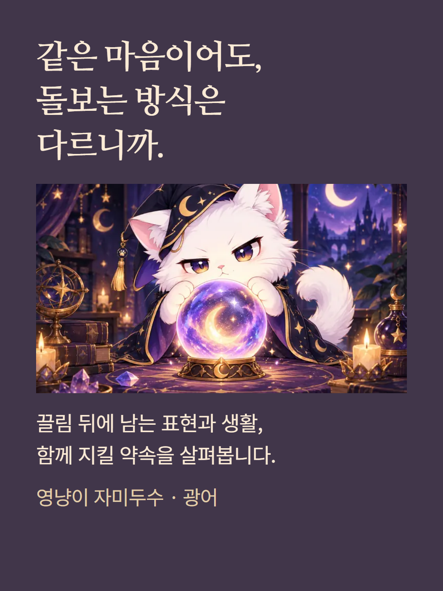
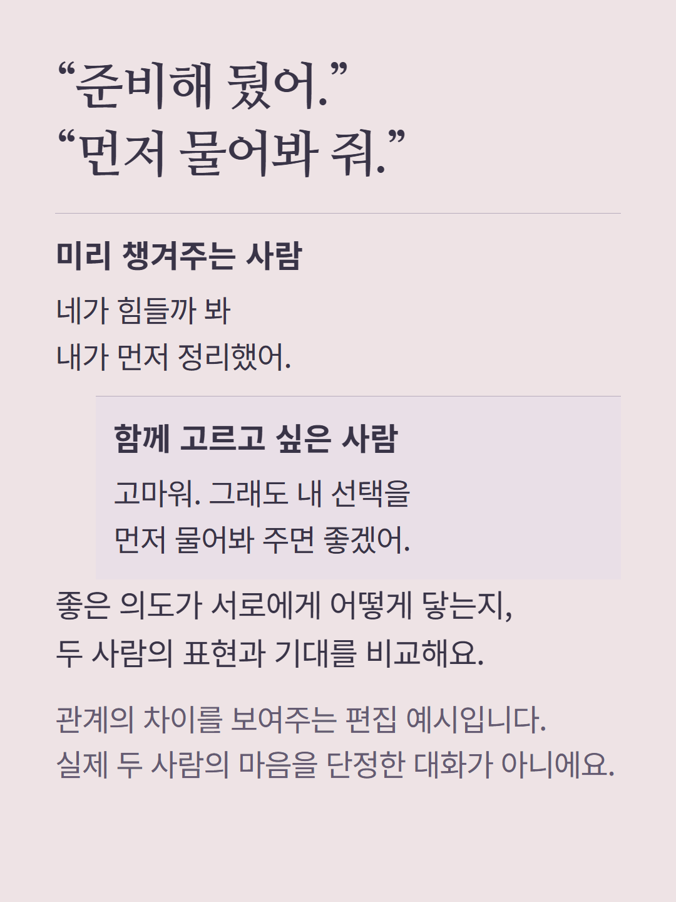
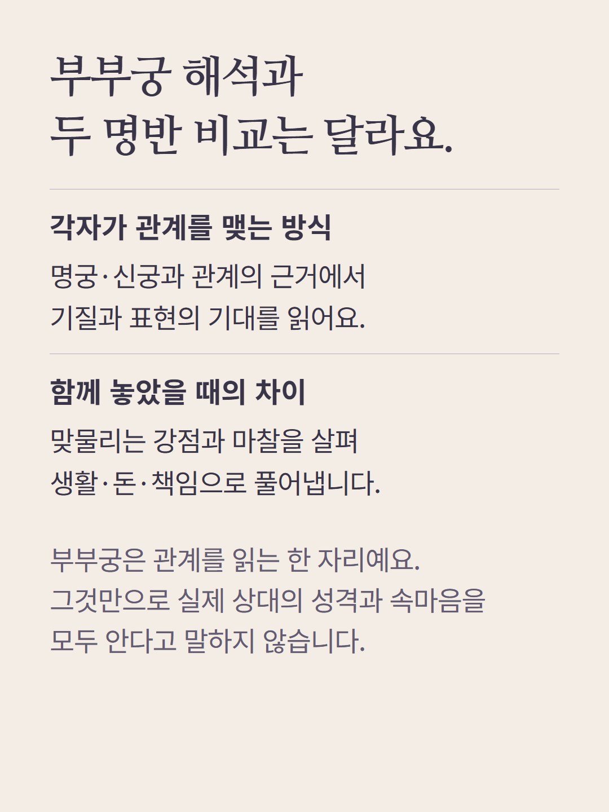
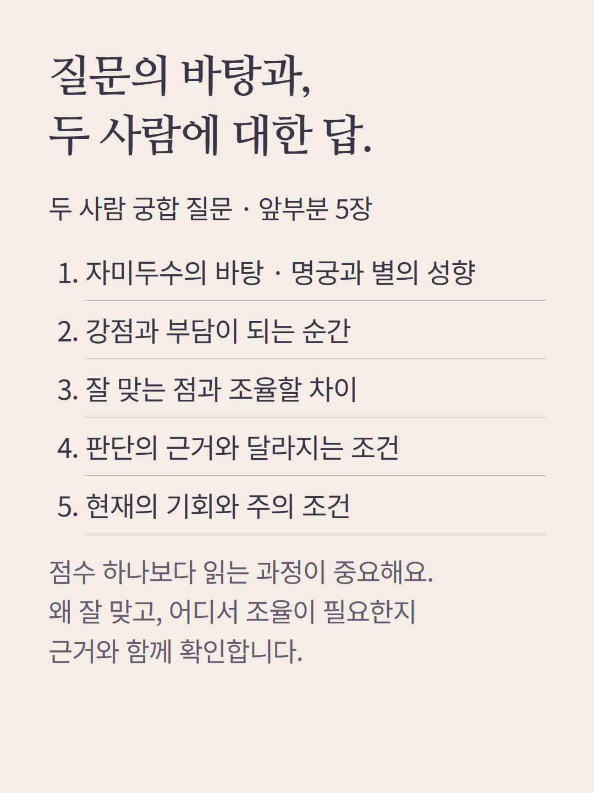
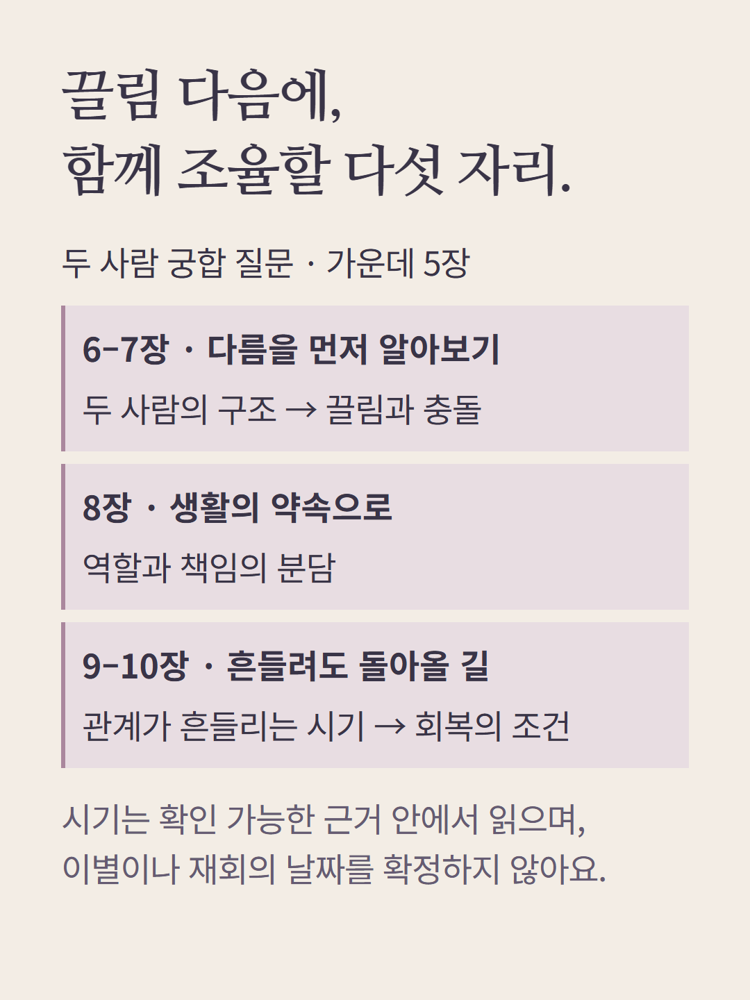
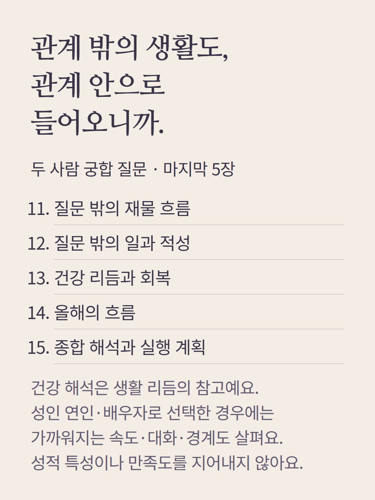
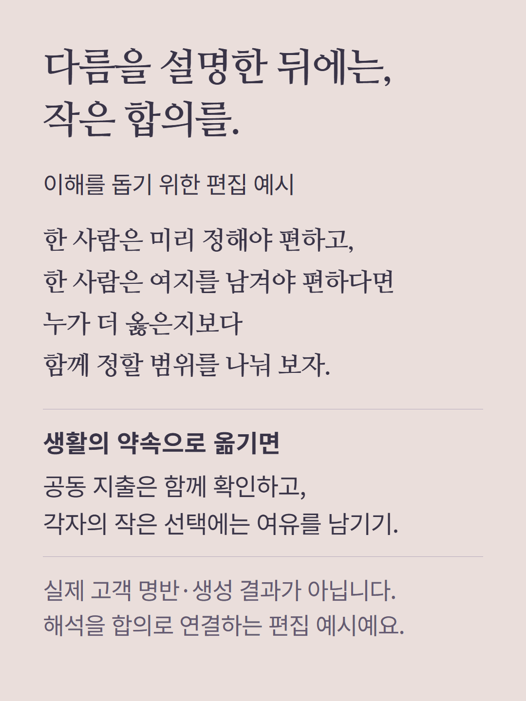
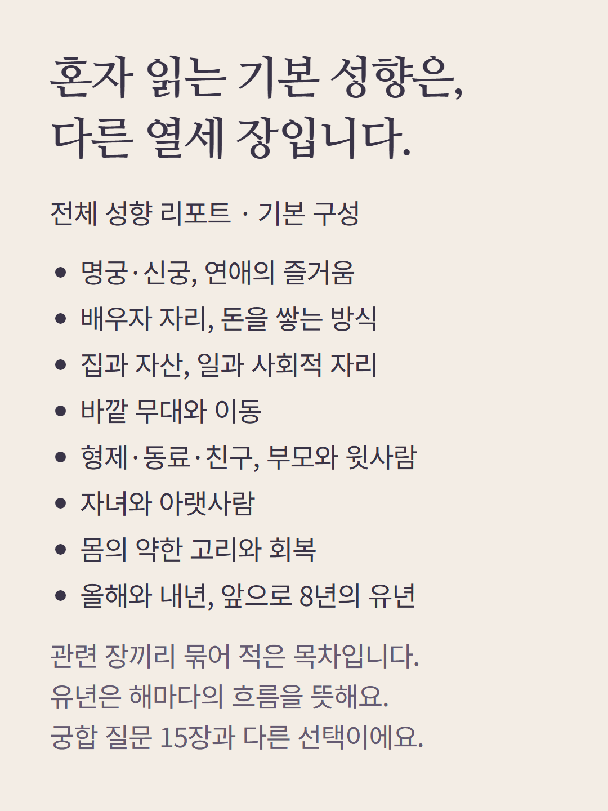
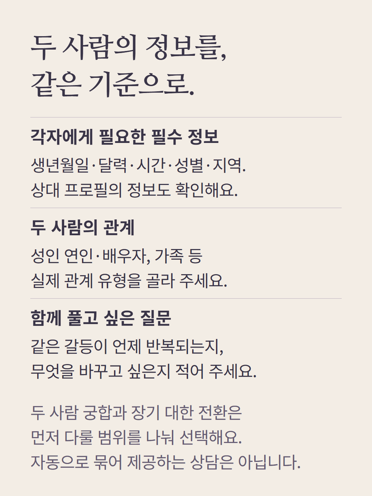
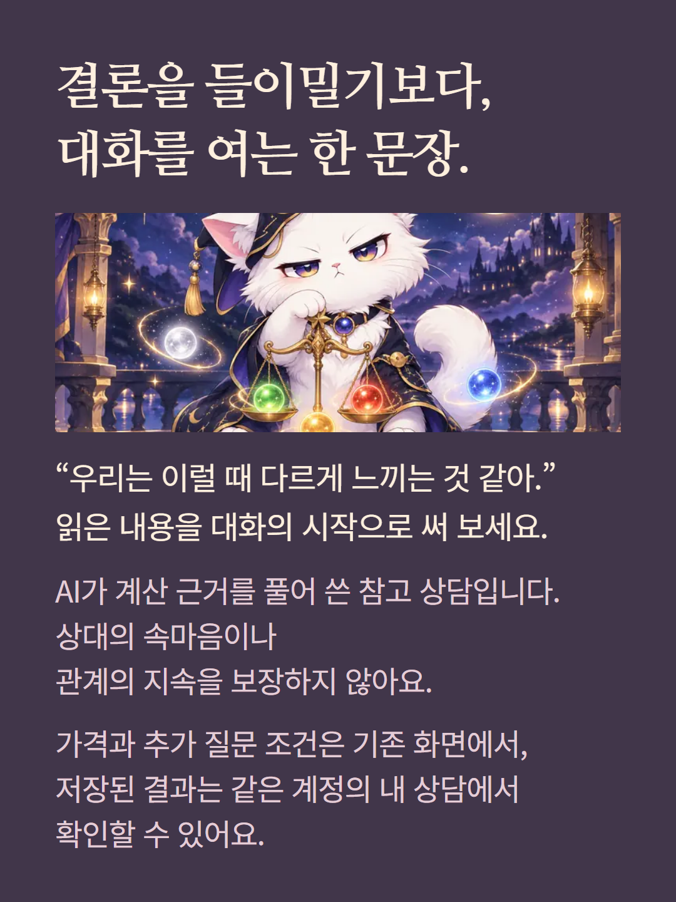

자미두수 광어 질문 상담은 두 사람의 명반과 성향·표현·생활·돈·책임을 비교합니다. 여기서는 성인 연인·배우자의 궁합 질문 15장을 읽기 순서대로 소개합니다. 관계 유형과 질문에 따라 초점이 달라지고 상대의 마음이나 관계 지속을 확정하지 않습니다. 질문 없이 고르는 기본 성향 리포트 13장과 별도 궁합 종류의 목차는 질문 상담과 다릅니다. 두 사람의 출생시간·성별·지역을 포함한 정보를 확인합니다. 대화와 비교는 편집 예시이며 실제 고객 결과가 아닙니다. AI가 계산 근거를 풀어 쓰며 가격과 추가 질문 조건은 기존 화면에서 확인합니다.